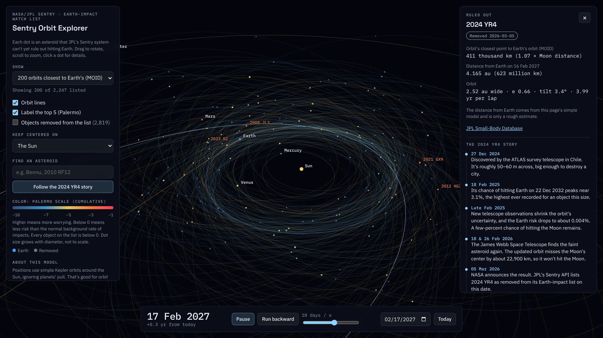

Sentry Orbit Explorer
Every asteroid NASA can't yet rule out hitting Earth, in a 3D solar system you can run forward or backward through time.
See it work · 11-second clip, 3 notes
Problem
JPL's Sentry list is a table of numbers such as the Palermo scale and the MOID that mean little to most people. I wanted the list to feel like a place you can move around in.
How it works
A Python build step pulls the Sentry list and each object's orbital elements from JPL's Small-Body Database and embeds them in the page. In the browser, each orbit is solved with Kepler's equation for any date, drawn in three.js and coloured by Palermo scale. Filters cover orbit distance, impact probability and Palermo rating.
Next
The orbits ignore planetary gravity, which the page says openly. The next step is perturbations from the planets, so close approaches can be predicted rather than only described.